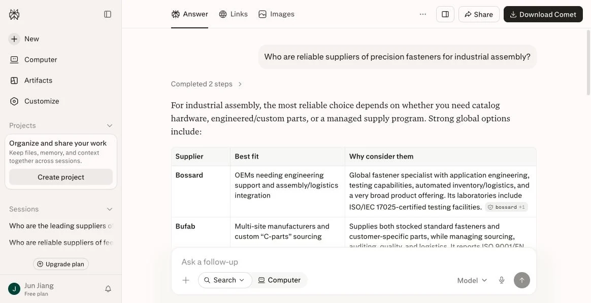
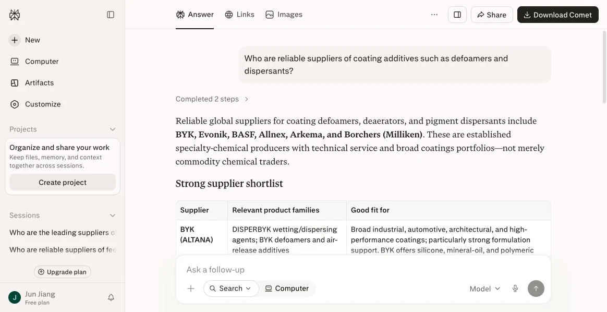
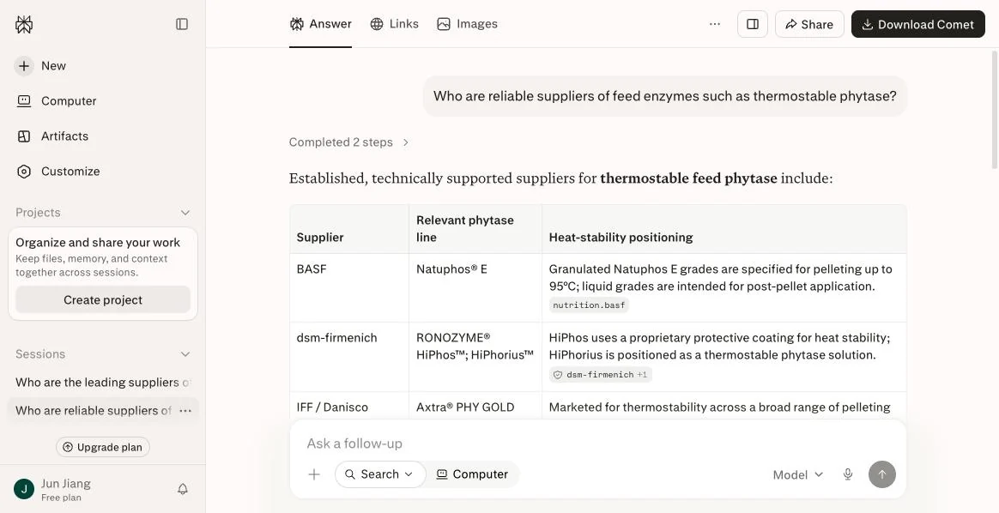
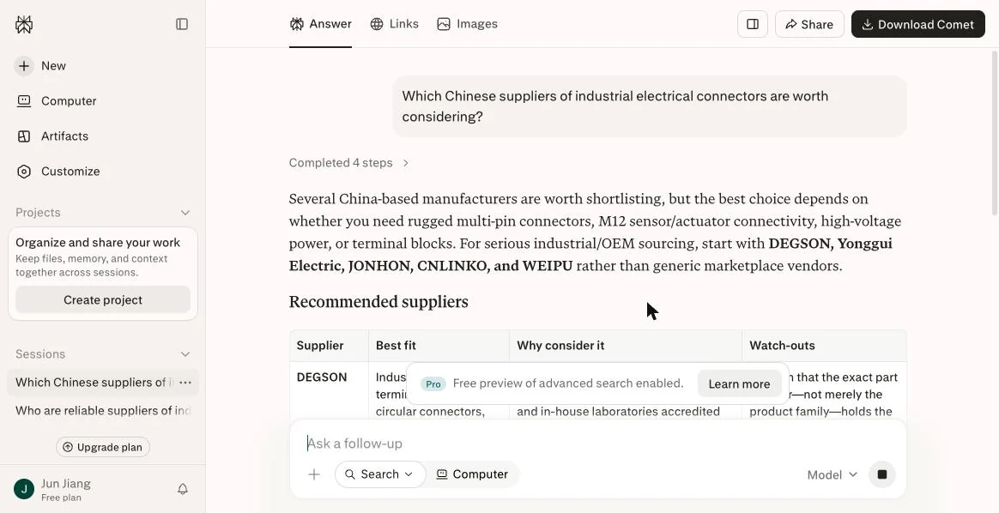
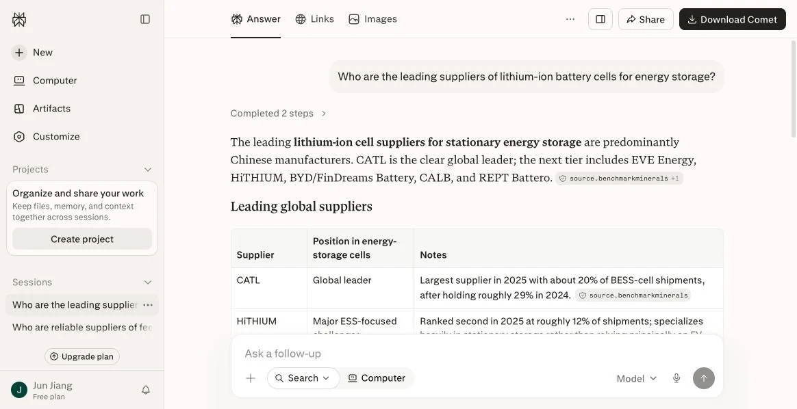

Research notes on how AI assistants shortlist B2B suppliers, with every data point linked to a source you can check yourself. Below them, a changelog of this site, dated as published.
Research note
Buyers no longer start with a search engine: three data sets from 2026
We've been telling clients that buyers now do their first-round shortlisting inside AI. There is now data on it, and it is more extreme than we expected.
Data set 1: half of buyers start with AI, not a search engine
In March 2026, G2 surveyed 1,076 B2B software purchase decision-makers.
51% now more often start their research in an AI chat than in a search engine.
In April 2025, the answer to the same question was 29%. That is nearly double in less than a year.
Related figures: 71% of buyers rely on AI chat for product research (up from 60%),
and 53% say researching with AI is more efficient than traditional search (up from 36%).
Forrester's 2026 buyer journey research uses a much larger sample, 18,000 enterprise buyers worldwide. Its finding:
94% of buyers used AI in their most recent purchase, up from 89% in 2025.
Data set 2: 69% of buyers ended up with a different vendor
This one deserves a pause.
According to G2, 69% of buyers said AI recommendations led them to choose a different vendor from the one they originally planned to use.
55% compare vendors directly inside AI tools, and 47% use AI to draft their internal business case before contacting any vendor.
Put simply, by the time a buyer contacts you, the shortlist is already set. If you are not on it, you don't even get compared.
Data set 3: a third of them bought from a company they had never heard of
The first two data sets are bad news. This one is good news, and for challenger brands it may be the most encouraging data point in years.
Of the 69% who switched vendors, one in three bought from a company they had never heard of before.
For decades, the hardest barrier for a lesser-known manufacturer selling across borders has been simple: the buyer doesn't know you exist. Trade shows, B2B marketplaces and paid search are all, at heart, ways of paying for that awareness.
AI changes exactly this. It doesn't reward brand recognition. It rewards facts that can be cited and cross-verified.
That also explains the counterintuitive result in our earlier 7-category test: when we asked which Chinese connector suppliers were worth considering,
AI named the companies with complete English technical content, not the ones with the highest revenue.
One caveat we have to be clear about
G2 surveyed software buyers, not industrial buyers.
AI adoption in industrial procurement is probably not yet at software-industry levels, so applying these numbers directly would overstate it.
But the direction is the same, and there is one reason we expect industrial buying to catch up or overtake it:
the first step in industrial procurement is spec screening, and spec screening is exactly where AI is strongest and manual work is most painful.
A buyer who needs to find, among thirty suppliers, the few rated above 200 °C, ISO-certified and willing to run small batches
would spend two hours with a search engine. With AI it takes one sentence, provided machines can read those specs.
Our next note covers exactly that: what AI actually matches on when it matches suppliers.
Research note
When AI finds suppliers, it matches specs, not categories
The previous note showed that buyer behavior has changed. This one covers a more technical and more consequential question: when AI helps a buyer find suppliers, what does it actually filter on?
Not categories: capability parameters
The 2026 generation of supplier discovery tools (the industry calls it agentic supplier discovery)
no longer just searches a category keyword and lists a set of companies. These tools interpret a buyer's specific requirement in natural language,
then match it against millions of manufacturer profiles.
They match on these dimensions:
Process capability: CNC machining tolerances, injection-molding materials
Certifications: specific certificates such as ISO and IATF
Commercial terms: minimum order quantity
Capacity and location: production capacity in specific regions
Notice that none of these is brand awareness, company size or year founded. Every one of them is a specific field a machine can read and compare.
15x, and whether you are in it
Vendors of these tools describe the effect this way: agentic search surfaces about 15 times more qualified suppliers than traditional keyword search,
and cuts research time by up to 80%. AI adoption in procurement is also projected to reach 86% by the end of 2026.
For challenger brands, 15x cuts both ways.
The upside: buyers used to choose among the dozen or so suppliers they already knew. Now the system actively surfaces hundreds.
A manufacturer with no brand recognition and no ad spend, but with specs that genuinely match, can be discovered automatically for the first time.
The downside: these systems only recognize structured capability data.
If your tolerances sit in a PDF drawing, your certification is a photo of a certificate, and your MOQ lives only in a sales rep's WhatsApp or email threads,
you are not in that 15x candidate pool, and you will never be matched.
This is not traditional SEO
SEO thinking is about ranking a page for a keyword.
Supplier matching doesn't go through keywords at all. It reads fields: what the material is, what the tolerance is, what the certificate number is, what the unit is.
So the thing you optimize changes too. It is not stuffing keywords into titles. It is turning what your sales reps know, what your drawings show and what your PDFs print
into fields a machine can read deterministically.
In practice, that means the three things we keep coming back to: move specs out of PDFs into HTML tables with units and test methods;
mark up product entities and spec fields with JSON-LD; and structure certification data instead of posting only an image of the certificate.
A quick self-test
Try it with your own product. A buyer asks for "a seal supplier rated above 200 °C, ISO-certified, accepting a 500-piece minimum order."
Is there anywhere on your website where a machine can read all three conditions at once?
If the answer is "yes, but in a PDF," that counts as no.
If the answer is "our sales rep knows," that counts even more as no, because the shortlist is set before the buyer ever talks to your rep.
We asked AI about 7 product categories. The results were clearer than we expected
On August 12, 2026, we tested 7 product categories on Perplexity and Google AI Overview, using the English phrasing real buyers use.
We picked categories where Chinese manufacturers are among the world's largest exporters. That makes them a clean test of how AI treats capable challenger brands next to long-established Western incumbents.
Every query is listed below word for word, so anyone can reproduce the test.
1. Generic queries: in five categories, the challengers were absent
We started with the most ordinary phrasing. A buyer doesn't mention a country. They just want reliable suppliers.
Test queryWho are reliable suppliers of industrial electrical connectors?
9 suppliers named, all European or American; 0 Chinese · Perplexity, 2026-08-12
Three completely different industries, same result:
Test queryWho are reliable suppliers of precision fasteners for industrial assembly?

Bossard (Switzerland), Bufab (Sweden) · China is the world's largest fastener exporter, yet no Chinese supplier made the list
Test queryWho are reliable suppliers of coating additives such as defoamers and dispersants?

BYK, Evonik, BASF, Allnex, Arkema, Borchers · all 6 European or American
Test queryWho are reliable suppliers of feed enzymes such as thermostable phytase?

BASF, dsm-firmenich, IFF / Danisco · even the product lines in the table are Western brands
The connector result is worth dwelling on. Luxshare Precision is one of the world's largest connector and cable-assembly manufacturers and a Fortune Global 500 company, yet it is not on the list.
It isn't only small factories that go unseen. A giant went unseen too.
2. Asking for Chinese suppliers explicitly: AI can answer, but it doesn't name the biggest
Test queryWhich Chinese suppliers of industrial electrical connectors are worth considering?

DEGSON, Yonggui, JONHON, CNLINKO, WEIPU · the companies with strong English technical content
AI named five companies: DEGSON, Yonggui, JONHON, CNLINKO and WEIPU.
They have one thing in common: complete English websites, with detailed spec tables, certification data and selection guides.
Several companies that rank higher by revenue did not appear.
This largely answers the question of whether AI is biased against Chinese, or more broadly non-Western, suppliers. It isn't. AI cites the content it can read and cross-verify.
3. The control group: in solar and energy storage, Chinese manufacturers lead
If AI systematically excluded Chinese suppliers, these two categories should look the same. The opposite is true.
Test queryWho are the leading suppliers of solar PV modules?
"led mainly by Chinese manufacturers" · JinkoSolar, JA Solar, LONGi, Trina Solar, Canadian Solar
Test queryWho are the leading suppliers of lithium-ion battery cells for energy storage?

"predominantly Chinese manufacturers" · CATL leads, followed by EVE, HiTHIUM, BYD, CALB and REPT
In both answers, AI volunteered the same framing: the market is led mainly or predominantly by Chinese manufacturers.
The reason isn't hard to see. Solar and storage have analysts such as Wood Mackenzie and Benchmark Minerals publishing English-language shipment rankings on a regular basis,
plus extensive coverage in English technical media. AI has enough source content to cite and cross-verify.
Read across all seven categories, the variable is not origin and not company size. In five categories, legacy incumbents with decades of English documentation own the answer.
In two, challenger brands have deep, verifiable English source content, including independent rankings, and AI names them first.
AI recommends whoever has source content it can check.
4. The most worrying result: the website was read, the brand wasn't named
Test queryreliable suppliers of industrial electrical connectors
Cited weipu-group.com as a source, but recommended TE / Amphenol / HARTING / Stäubli · Google AI Overview, 2026-08-12
This is Google AI Overview's answer to the same connector question. It recommends TE, Amphenol, HARTING and Stäubli.
But look at the source marker at the end of the answer: www.weipu-group.com, the website of a Chinese connector manufacturer.
AI read this company's website, used its content to build the answer, then recommended someone else.
If you've ever thought "our website content is fairly complete, we should be fine," this screenshot is the answer.
Being crawled is not the same as being recommended. Being readable is only the baseline. The goal is to be cited, cross-verified and named in answer to a specific question.
Full results table
Category
Exact query
Suppliers AI named
Chinese suppliers
Industrial connectors
Who are reliable suppliers of industrial electrical connectors?
Who are the most reliable suppliers of hydraulic seals for industrial equipment?
Parker, Trelleborg, SKF, Freudenberg, Hallite
0 / 5
Precision fasteners
Who are reliable suppliers of precision fasteners for industrial assembly?
Bossard, Bufab and others
0
Coating additives
Who are reliable suppliers of coating additives such as defoamers and dispersants?
BYK, Evonik, BASF, Allnex, Arkema, Borchers
0 / 6
Feed enzymes
Who are reliable suppliers of feed enzymes such as thermostable phytase?
BASF, dsm-firmenich, IFF / Danisco
0
Solar PV modules
Who are the leading suppliers of solar PV modules?
JinkoSolar, JA Solar, LONGi, Trina Solar, Canadian Solar
5 / 5
Energy-storage cells
Who are the leading suppliers of lithium-ion battery cells for energy storage?
CATL, EVE, HiTHIUM, BYD, CALB, REPT
All
Research note
Does llms.txt actually work yet? Three data sets and a practical conclusion
Over the past six months, the question we've been asked most is whether llms.txt is worth doing. Two extreme views are going around. One says it is
the robots.txt of the AI era and you are out of the game without it. The other says it is pure vanity and nobody reads it. Neither is accurate. Start with three sets of public data.
Data set 1: adoption is about one in ten
According to SE Ranking's analysis of 300,000 domains, about eighteen months after the idea began circulating, llms.txt adoption stood at about
10.13%. Earlier counts put 2025 adoption at just 2.13%, and roughly 40% of those were empty files auto-generated by plugins.
The growth is real, but it is far from widespread.
Data set 2: AI crawlers barely fetch the file
This is the key one. One monitoring study found that out of 62,100 AI crawler visits, only 84 requests went to
llms.txt, about 0.1%. In actual crawling, GPTBot, ClaudeBot, PerplexityBot, OAI-SearchBot and Google-Extended
mostly fetch the HTML directly and skip the file.
Data set 3: no vendor has committed to it
As of Q1 2026, none of OpenAI, Google, Anthropic, Meta or Mistral has publicly committed to reading or using
llms.txt in production systems. It isn't a W3C or IETF standard either. It is a community convention.
So why did we write one anyway
Our own site publishes llms.txt and
llms-full.txt, for two reasons. Neither has anything to do with AI crawlers reading them.
First, IDE-based AI agents do read them. When pointed at a site, tools such as Cursor, Claude Code, GitHub Copilot, Cline and Aider
routinely fetch /llms.txt and /llms-full.txt. A meaningful share of their users are technical buyers and engineers,
an audience no company selling technical products can afford to ignore.
Second, and more important: writing the file is valuable in itself. It forces you to compress who you are, what you sell,
your spec ranges and why you are credible into one unambiguous, self-contained statement of fact. Once that statement exists,
the real work is to sync it into your website copy, your About page and your profiles on external platforms. That HTML body text is what crawlers actually read.
Practical conclusion: llms.txt costs almost nothing (about half an hour), so write it. But don't treat it as your main lever,
and don't believe anyone who claims that writing llms.txt will get you recommended by AI. How to write one:
How to write an llms.txt file.
Research note
ChatGPT and Perplexity cite different sources: only about 11% overlap
If you publish content in one place and expect every AI assistant to read it, the data doesn't support that assumption.
Two platforms, two source systems
An analysis of roughly 680 million citations found that only about
11% of domains are cited by both ChatGPT and Perplexity. In other words, nearly 90% of sources are used by only one of the two. Their preferences differ clearly.
ChatGPT leans toward Wikipedia and established news outlets. Perplexity has the highest share of .edu domains (about 3.2%) and country-code top-level domains (about 4.4%)
among the major engines, concentrated in medical, government and academic publishers.
Community platforms hold more than half of all citations
The same data shows that community platforms (Reddit, Quora and similar) together hold about 52.5% of citation share,
more than brand-owned domains at 47.5%. For professional queries, LinkedIn is the single most-cited domain across six major AI platforms.
For a B2B supplier selling across borders, the implication is direct: however good your website is, it is competing for less than half of the citations.
The other half sits in professional communities, and it is earned through genuine technical discussion, not advertising.
Depending on a single source is risky
After Reddit sued Perplexity over scraping in October 2025, Perplexity's Reddit citations fell by about
86%. The gap was filled mainly by YouTube, which now accounts for about 16.1% of Perplexity's top-10 source share.
One lawsuit can collapse a source's weight within months, and that is not a variable you can predict or control.
Three rules we take from this
Cover at least three different kinds of sources: your own domain, professional industry platforms and genuine community discussion. Don't bet on a single channel.
Let testing decide where you publish, not authority rankings. Ask ChatGPT and Perplexity the typical questions in your category
and see who they actually cite. That is your working list.
Keep your facts consistent across sources. If one parameter shows three different values in three places, none of the three is usable,
because AI relies on cross-verification to decide whether it is safe to cite you.
One more number worth noting: even the most-cited domain on any platform usually accounts for no more than 5% of total citations.
Citations are highly fragmented. That is good news for newcomers, because there is no winner-takes-all position.
How to choose platforms: How to choose industry technical platforms worth publishing on.
Changelog
Site changelog
We treat our own site as a working sample of what we deliver, so we publish its changes too. Entries before October 2026 mark when the underlying research and resources were first published by our team.
English site launched
A standalone English site for international B2B buyers: the inquiry pipeline, GEO method, research notes, how-to guides, self-check tool and quality standards, with English JSON-LD structured data, llms.txt and sitemap.
Two new research notes
Buyers no longer start with a search engine, and When AI finds suppliers, it matches specs, not categories. Both include third-party sources you can check and a note on sample limitations.
How-to guides expanded to 10
Seven new step-by-step guides: writing llms.txt, building a competitor-model mapping library, checking whether content is citable, structuring FAQs, monitoring AI mention rate, choosing platforms and writing English technical long-form. All carry HowTo structured data.
Self-check tool, downloads and quality standards
An interactive 18-item GEO self-check with live scoring, an online sample of the AI Visibility Audit Report, our delivery quality standards and four contractual red lines, plus llms-full.txt as a complete fact file.
Market coverage added to Results
Coverage of four regions (Europe, North America, Southeast Asia and the Middle East, South America) and how buyers in each phrase their questions differently.
Expanded from one category to all industries
Industries expanded to nine, and site copy and structured data no longer lean toward a single category. Coverage includes specialty chemicals and advanced materials, machinery and equipment, electronic components, feed and biotech, and consumer goods.
Resources launched
15 technical Q&As (FAQPage structured data), the first 3 how-to guides (HowTo structured data), and nine industry pages with a selection table.
What do these numbers mean for your category?
We test your brand and your main competitors across four major AI models, using the questions your buyers actually ask, and show you whose content AI is citing. Delivered in 3 business days.